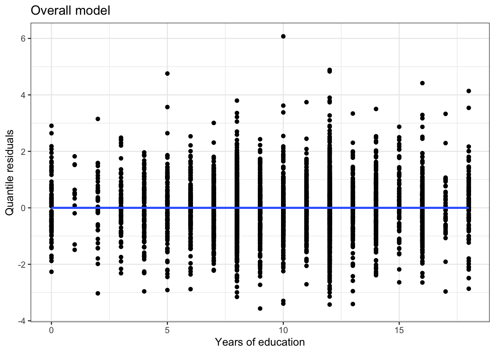

The quantile residual plot looks good: the quantile residuals are randomly scattered around 0, with no clear pattern and constant variance, and most residuals are between -2 and 2.
rootogram(m1)
The observed counts closely match the predicted counts from the fitted model.
Let’s break the shape assumption in the zero component, by adding an \(X_i^2\) term that we fail to model:
n <-1000x <-rnorm(n)p <-exp(0.5+ x + x^2)/(1+exp(0.5+ x + x^2))lambda <-exp(-0.2+0.7*x)z <-rbinom(n, 1, p)y <-rztpois(n, lambda = lambda)*zm1 <-hurdle(y ~ x, dist ="poisson", zero.dist ="binomial")data.frame(x = x, resids = countreg::qresiduals(m1)) |>ggplot(aes(x = x, y = resids)) +geom_point() +geom_smooth() +theme_bw()
`geom_smooth()` using method = 'gam' and formula = 'y ~ s(x, bs = "cs")'
We can now see a clear pattern to the quantile residuals, suggesting a violation of the shape assumption.
library(patchwork)## randomized quantile residuals for count data in hurdle model## m = fitted hurdle model (poisson or negative binomial)qresid_count <-function(m){ y <- m$y x <-model.matrix(m, "count") x <- x[y >0,] y <- y[y >0] lambdas <-exp(x %*% m$coefficients$count) dist <- m$dist$countif(dist =="poisson"){ cdf_b <-c(pztpois(y, lambda = lambdas)) cdf_a <-c(suppressWarnings(pztpois(y-1, lambda = lambdas))) } elseif(dist =="negbin"){ cdf_b <-c(pztnbinom(y, mu = lambdas, size=m$theta)) cdf_a <-c(suppressWarnings(pztnbinom(y-1, mu = lambdas, size=m$theta))) } else {return("Error: please use a poisson or negative binomial hurdle model") } resids <-qnorm(runif(length(y), cdf_a, cdf_b))return(resids)}# randomized quantile residuals for the binomial componentqresid_zero <-function(m){ z <- m$y >0 x <-model.matrix(m, "zero") p <-exp(x %*% m$coefficients$zero)/(1+exp(x %*% m$coefficients$zero)) u <-ifelse(z ==1, runif(length(z), 1-p, 1), runif(length(z), 0, 1-p))return(qnorm(u))}p1 <-data.frame(x = x[y >0], resids =qresid_count(m1)) |>ggplot(aes(x = x, y = resids)) +geom_point() +geom_smooth() +theme_bw() +labs(y ="Quantile residuals", title ="Count component")p2 <-data.frame(x = x, resids =qresid_zero(m1)) |>ggplot(aes(x = x, y = resids)) +geom_point() +geom_smooth() +theme_bw() +labs(y ="Quantile residuals", title ="Zero component")p1 + p2
The quantile residual plot for the count component looks good, but the quantile residual plot for the zero component shows the violation of the shape assumption.
Likewise, if we violate the shape assumption for just the count component, the quantile residual plots will show us where the violation is:
The quantile residual plots and the rootogram show that there is greater variability in the counts \(Y_i|(Y_i > 0)\) than the model accounts for, and we aren’t correctly modeling the mean-variance relationship (non-constant residuals).
Diagnostics for the negative binomial hurdle model look much better!
library(AER)data("NMES1988")nmes <- NMES1988 |> dplyr::select(visits, hospital, health, chronic, gender, school, insurance)m1 <-hurdle(visits ~ ., dist ="poisson", zero.dist ="binomial", data = nmes)data.frame(x = nmes$school, resids = countreg::qresiduals(m1)) |>ggplot(aes(x = x, y = resids)) +geom_point() +geom_smooth() +theme_bw() +labs(x ="Years of education", y ="Quantile residuals", title ="Overall model")
Most of the variables are either factors or only have a few possible values, but years of education has more distinct values. A quantile residual plot with years of education shows no violations in shape assumptions, but there does appear to be overdispersion. A rootogram for the Poisson hurdle model confirms that we are substantially underestimating variability in the counts:
rootogram(m1)
Let’s try a negative binomial model instead:
m2 <-hurdle(visits ~ ., dist ="negbin", zero.dist ="binomial", data = nmes)data.frame(x = nmes$school, resids = countreg::qresiduals(m2)) |>ggplot(aes(x = x, y = resids)) +geom_point() +geom_smooth() +theme_bw() +labs(x ="Years of education", y ="Quantile residuals", title ="Overall model")
`geom_smooth()` using method = 'gam' and formula = 'y ~ s(x, bs = "cs")'

rootogram(m2)
So: a negative binomial hurdle model should be used, but no transformations appear needed on the explanatory variables.